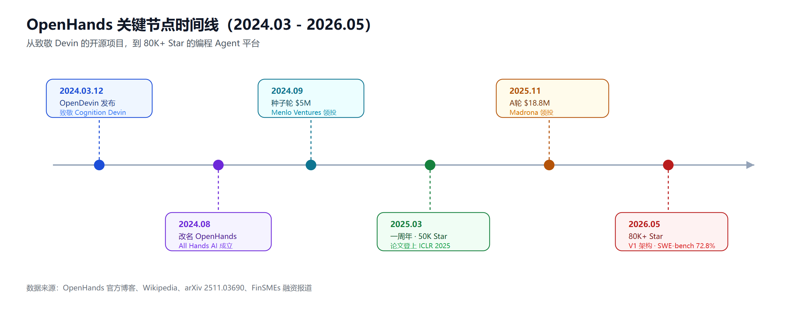

OpenHands 深度调研：从 OpenDevin 到 80K Star 开源编程 Agent 的两年进化
2024 年 3 月 12 日，一个致敬闭源产品 Devin 的开源项目在 GitHub 上悄悄发布，名字叫 OpenDevin。两年后的今天，它改名为 OpenHands，累计拿到 GitHub 80,000+ Star、900 万+下载量，背后的公司 All Hands AI 完成了两轮融资，最新一轮是 2025 年 11 月由 Madrona 领投的 $1880 万美元 A 轮。它的核心团队论文登上了 ICLR 2025，它的 SDK 在 arXiv 上被拿来和 OpenAI、Anthropic、Google 三家的 Agent SDK 逐项对比。
这不是一个靠营销堆出来的故事。OpenHands 的每一步演进——从命令行小工具到有沙箱执行、模型路由、安全分析器的完整 Agent 平台——都有对应的技术论文和架构重构记录可查。这篇文章按时间线拆解它是怎么走到今天的，再把它放进 Devin、Claude Code、OpenCode 这些同类产品中做实力对比，帮你判断它是否值得放进你的工具箱。
起源：一个"致敬"项目的自我进化
OpenHands 的第一行代码来自 Qwen 团队的两位成员 Binyuan Hui 和 Junyang Lin。他们当时想做一个开源版的 Devin——Cognition AI 在 2024 年初推出的那个引发全网讨论的"AI 软件工程师"。项目最初起名 OpenDevin，意图很直白：把闭源 Devin 展示的能力，用开源的方式还原出来。
项目发布后很快聚集起社区，CMU 教授 Graham Neubig、有开源公司产品/工程背景的 Robert Brennan，以及 UIUC 博士生 Xingyao Wang 相继加入核心贡献者行列。三人随后联合创立了 All Hands AI 公司，专门支撑项目的长期发展。2024 年 8 月，项目正式改名为 OpenHands——团队的解释是，项目的范围已经远超"复刻 Devin"，"OpenHands"这个名字既呼应了开源社区的开放姿态,也暗示"给开发者多一双手"的定位。项目 Logo 也换成了 🙌（双手举起庆祝）这个 emoji。
2025 年 3 月，OpenHands 迎来一周年，团队公开的数据是：超过 50,000 GitHub Star、3,500+ 次提交、250+ 独立贡献者、每日数千次应用下载。同年，团队将 OpenHands 的系统设计整理成论文，发表在 ICLR 2025（国际学习表征会议）上，论文标题是《OpenHands: An Open Platform for AI Software Developers as Generalist Agents》，作者名单里能看到 UIUC、CMU、Yale、UC Berkeley、阿里巴巴等多个机构的名字——这本质上是一个学术圈和工业界共同驱动的项目。
两轮融资：从种子轮到 Madrona 领投的 A 轮
-
2024 年 9 月，All Hands AI 完成 500 万美元种子轮融资，由 Menlo Ventures 领投，Pillar Companies、Betaworks、Rebellion 等跟投。这是项目改名后不久拿到的第一笔机构资金，用于把开源项目转化为可持续运营的公司。
-
2025 年 11 月 18 日，All Hands AI 宣布完成 1880 万美元 A 轮融资，由 Madrona 领投，Menlo Ventures、Obvious Ventures、Fujitsu Ventures、Alumni Ventures 跟投。公司同时把总部信息更新为美国波士顿，融资新闻稿的标题直接点明用途：把开源云端编程 Agent 带进企业市场（"Bring Open-Source Cloud Coding Agents to Enterprises"）。
两轮相加，All Hands AI 累计融资约 $23.8M。对比同期其他编程 Agent 公司（Cognition 的 Devin 融资规模在数亿美元级别），OpenHands 走的是一条"轻资本、重社区"的路线——真正撑起它估值和影响力的,是开源社区贡献出的 Star 数、下载量和论文引用,而不是烧钱铺量。
产品版图：从一个命令行工具到完整平台
两年时间里，OpenHands 的产品形态经历了明显的扩张。今天它至少包含这几层：
- 开源核心：MIT 协议，可自由自托管，这是项目的信任基础
- Agent Canvas：本地优先的可视化工作台（Web GUI），可以运行 OpenHands 自身的 Agent，也可以通过 ACP（Agent Client Protocol）接入 Claude Code、OpenAI Codex、Gemini CLI 等第三方 Agent，统一管理
- OpenHands Software Agent SDK：面向开发者的编程接口，支持从几行代码的最简 Agent，扩展到带自定义工具、内存管理的复杂 Agent
- OpenHands Cloud：托管的云端沙箱执行环境，免去自己搭建 Docker/K8s 的成本
- 企业控制平面：RBAC、SAML 单点登录、审计日志、预算管控，支持部署到客户自己的 VPC 中
从自动化场景来看，官方模板已经覆盖 Slack @提及监听、Linear 工单自动分类、Jira 事故分诊、GitHub PR 审查、CI 失败自动修复、安全漏洞修复等开箱即用的工作流。也就是说,今天的 OpenHands 已经不满足于"帮你写代码"，而是想成为软件开发生命周期（SDLC）里可以调度的自动化基础设施——这一点和团队自己的定位陈述一致："不只是帮助开发者写代码，而是运行软件生命周期中有意义的部分"。
架构进化：V0 到 V1 的一次彻底重写
如果只看表面的功能列表，容易低估 OpenHands 在工程上做的事情。2025 年 11 月发布的论文《The OpenHands Software Agent SDK: A Composable and Extensible Foundation for Production Agents》记录了一次完整的架构重写，从 V0 到 V1。
V0 的问题：最早的架构是单体仓库（monorepo），Agent 核心逻辑、评测代码、前后端应用全部耦合在一起。当时假设所有工具调用都必须在沙箱容器里执行，这个假设后来带来了连锁问题——一旦要支持本地直接执行（比如给 CLI 场景用），团队只能给 MCP（Model Context Protocol）和工具系统写一套本地专用的重复实现，绕开原有沙箱路径。配置系统同样在失控：140+ 个配置字段、15 个配置类、2800 行配置代码，不同入口（CLI、Web UI、GitHub App、SaaS）各自维护一套覆盖规则，同样的参数在不同入口跑出来的结果可能不一致。
V1 的四条设计原则：
- 沙箱可选，非强制：默认在同一进程内执行 Agent 和工具调用，符合 MCP 的设计假设；需要隔离时再透明切换到容器化沙箱
- 无状态为默认，状态只有一个真源：Agent、工具、LLM 全部设计为不可变的 Pydantic 模型，唯一可变的是 ConversationState 这个统一状态对象，支持确定性回放和长期恢复
- 严格的关注点分离：把 Agent 核心逻辑拆成独立的 SDK，CLI、Web UI、GitHub App 等下游应用作为共享库来消费，而不是各自复制逻辑
- 两层可组合性：部署层面拆成 SDK、Tools、Workspace、Agent Server 四个独立 Python 包；能力层面暴露类型化的组件模型，开发者可以声明式地扩展或替换工具、Agent
四个包各司其职：openhands.sdk 提供核心抽象（Agent、Conversation、LLM、Tool、事件系统）；openhands.tools 是具体工具实现；openhands.workspace 提供 Docker、托管 API 等执行环境；openhands.agent_server 暴露 REST/WebSocket 接口用于远程执行。这套设计让同一份 Agent 代码可以"本地起步、随处部署"——从笔记本上的交互式调试，到切换一个 Workspace 类型就能扩展成容器化的多租户生产部署，中间不需要改动业务代码。
论文里还系统对比了 OpenHands SDK 与 OpenAI Agents SDK、Claude Agent SDK、Google ADK 在 31 项特性上的差异，OpenHands 独有的能力包括：
- 原生远程执行 + 安全沙箱（OpenAI 需要外部 Temporal 编排，Claude/Google 只支持本地执行）
- 内置 REST+WebSocket 生产服务器（其他三家只是纯库，开发者要自己搭服务层）
- LLM 驱动的动作级安全分析器（给每个工具调用打风险等级：低/中/高，高风险动作会暂停等待人工确认）
- 100+ 模型的模型无关多 LLM 路由（通过 LiteLLM），且对不支持原生 function calling 的模型也有兼容方案
- VNC 桌面、浏览器内 VSCode、内置 Chromium 浏览器三种交互式工作区访问方式，让 Agent 不再是"黑箱进程"

性能实力：SWE-bench 和 GAIA 上的数字
数字比叙事更有说服力。根据 2025 年 11 月的 SDK 论文，OpenHands Software Agent SDK 在两个标准学术基准上的表现：
- SWE-Bench Verified（衡量 Agent 解决真实 GitHub issue 的能力）：Claude Sonnet 4.5 + 扩展思考模式下达到 72.8%，Claude Sonnet 4 为 68.0%，GPT-5（高推理强度）为 68.8%，开源模型 Qwen3 Coder 480B A35B 为 65.2%
- GAIA（衡量 Agent 通用任务解决能力）：Claude Sonnet 4.5 达到 67.9%，GPT-5 为 62.4%，Qwen3 Coder 为 41.2%
这些结果略优于此前的研究系统 OpenHands-Versa，验证了 V1 架构重构没有牺牲 Agent 能力,反而在保持研究级性能的同时获得了生产级的工程稳定性。
团队还维护着一个独立的模型评测榜单 OpenHands Index，覆盖 issue 解决、从零构建应用、前端开发、软件测试、信息收集五类任务，同时统计成本和耗时。2026 年 5 月的更新显示：综合性价比上 Claude Opus 4.7 排名第一，GPT-5.5 紧随其后；DeepSeek-3.2-Thinker 用 1/10 的价格跑出了很有竞争力的成绩;响应速度上 Claude 和 GPT 系列凭借并行工具调用占优;软件测试类任务上 Claude 是断层式的第一,显示出很强的调试能力。这个榜单某种程度上也说明了 OpenHands 的一个战略定位——它不绑定任何单一模型厂商，而是把自己变成"哪个模型好用就接入哪个"的中立测试场。
横向对比：OpenHands 在编程 Agent 生态中的位置
编程 Agent 赛道到 2026 年已经足够拥挤，有必要把 OpenHands 放进坐标系里看清楚它和谁在竞争、和谁互补。
| 产品 | 性质 | 核心定位 | 与 OpenHands 的关系 |
|---|---|---|---|
| Devin / Devin Desktop | 闭源，Cognition AI | 全自主云端 AI 软件工程师，任务从描述到 PR 全自动完成 | 直接竞品，闭源对开源的正面对抗 |
| Claude Code | 闭源，Anthropic | 终端优先的交互式编程 Agent | 既是竞品也是被集成对象（可通过 ACP 接入 Agent Canvas） |
| OpenCode | 开源，MIT | 终端优先的"内循环"交互式编码工具，75+ 模型供应商 | 互补关系，OpenHands 官方博客将其定位为"内循环 vs 外循环"分工 |
| OpenAI Agents SDK / Google ADK | 半开源框架 | 通用 Agent 编排框架,非专注软件工程 | 技术对标对象，论文中逐项对比特性 |
vs Devin：Devin 的核心叙事是"全自主 AI 工程师"，走订阅制商业模式（Free / Pro $20 / Max $200 / Teams $80+$40 每席位 / Enterprise 定制）。2025 年底 Cognition 收购 Windsurf 并于 2026 年 6 月改名 Devin Desktop，进一步把 IDE 体验和自主 Agent 整合到同一账户体系下。OpenHands 走的是相反路线——核心永远开源可自托管，商业化只发生在企业治理层。选 Devin 意味着买断整套体验和支持,选 OpenHands 意味着自己承担部署成本但换来完全的代码和数据主权,这是本质的路线分歧,不是简单的功能对比。
vs Claude Code：Claude Code 是终端里跑的单一 Agent，深度绑定 Anthropic 自家模型（Claude Agent SDK 论文里明确写着"locked to Anthropic's Claude models only"）。OpenHands 则通过 LiteLLM 做到 100+ 模型自由切换，同时把 Claude Code 当作可以被 Agent Canvas 接入的"外部 Runtime"之一——你完全可以一边用 Claude Code 写代码,一边让它的会话被 OpenHands 平台统一记录和调度。二者不是完全的替代关系,更像是"引擎"和"车身"的关系。
vs OpenCode：这两个项目都是开源、MIT 协议、模型无关,但分工不同。OpenCode 定位是"终端里的交互式内循环"——你坐在键盘前，一步步和 Agent 对话式协作;OpenHands 定位是"外循环里的委托式工作"——Agent 拿到任务后独立读代码、改文件、跑测试、开 PR，不需要你实时盯着。OpenHands 官方博客甚至专门写过一篇《OpenCode vs OpenHands》的对比文章，结论是两者可以搭配使用:OpenHands 负责后台自动化并产出 PR，OpenCode 负责后续的本地调试和精修。如果你想了解更偏"团队协作管理"维度的选择，也可以参考我们之前写过的开源 Multica 平台深度拆解——它是坐在 OpenCode/Claude Code 之上的看板式协调层，和 OpenHands 面对的问题类似但解法不同。
无法回避的风险案例
2025 年 4 月，《Wired》杂志报道称，一名为美国退伍军人事务部（VA）工作的顾问提议用 OpenHands 为该部门编写代码。报道中被采访的部门员工表达了明确担忧：在没有完成既定安全审查流程的情况下，让一个自主 Agent 接触涉及敏感系统和信息的代码仓库，风险敞口过大。
这个案例值得单独拿出来说,因为它精准指出了所有"能自主读写代码、执行命令"的 Agent 平台都要面对的现实问题——技术上能做到自动化,不代表组织流程上已经准备好承接这种自动化。OpenHands 在企业层提供的 RBAC、审计日志、VPC 私有化部署,本质上就是在回应这类担忧,但工具本身解决不了流程和审批文化的问题,这需要使用方自己补齐。
谁适合用 OpenHands
适合：
- 需要模型自由切换、不想被单一厂商锁定的团队（100+ 模型通过 LiteLLM 接入）
- 已经在用 Claude Code / Codex / Gemini CLI，想要一个统一工作台管理多个 Agent 会话的开发者
- 需要把"外循环"自动化——工单分诊、PR 审查、CI 修复、安全漏洞修复——沉淀为可复用工作流的工程团队
- 对数据主权敏感、需要自托管到自己 VPC 的企业
不太适合：
- 只想要一个开箱即用、无需自己承担运维成本的全自主编程助手（更适合看 Devin 或 Claude Code）
- 团队规模很小、日常只需要终端里交互式改代码,没有"批量任务外包给 Agent"的需求（更适合直接用 OpenCode）
- 需要把多个 Agent 编排成看板任务、做技能沉淀管理的团队,可能更适合直接看 Multica 这类协调层平台
小结
OpenHands 两年走过的路径,是开源 AI 项目里少见的"技术叙事驱动商业化"的案例:先有致敬 Devin 的一行代码，再有社区聚拢起来的贡献者，再有支撑长期发展的公司和两轮融资，再有登上 ICLR 的系统论文，再有从 V0 到 V1 的彻底架构重写。80,000+ Star、900 万+下载量、72.8% 的 SWE-bench Verified 成绩,这些数字背后是持续两年的工程投入,不是一次性的营销爆发。
对于正在纠结"该不该在编程工作流里引入 Agent 平台"的团队,OpenHands 提供的不是唯一答案,而是一个特定坐标——如果你在意模型自由、数据主权、以及把重复性工程工作外包给可审计的自动化流程，它值得放进候选清单;如果你只是想要一个立即能用、不操心运维的助手，闭源产品在体验打磨上目前仍有优势。选型的关键不是"哪个更强"，而是"你愿意用多少运维成本换多少控制权"。
免责声明：本文基于公开资料整理,不构成任何投资、采购或安全合规建议。涉及企业数据和敏感系统的 Agent 部署,请务必结合自身安全审查流程评估。
参考来源
- OpenHands - Wikipedia
- One Year of OpenHands: A Journey of Open Source AI Development - OpenHands Blog
- All Hands AI raises $5M to build open source agents for developers - TechCrunch
- OpenHands Raises $18.8M in Series A Funding - FinSMEs
- The OpenHands Software Agent SDK: A Composable and Extensible Foundation for Production Agents - arXiv
- The OpenHands Index: 3 Months Out - OpenHands Blog
- Inside DOGE's AI Push at the Department of Veterans Affairs - Wired
- OpenCode vs OpenHands: AI Coding Agents Compared - OpenHands Blog
- OpenHands 官网
相关阅读
- 开源 Multica 全解析：Managed Agents 平台深度拆解
- OpenCode 实战指南：免费 AI 编程 Agent
- 闭源 AI 编程工具横评 2026
- 企业 AI Agent 部署实战手册
- Agent 治理与可观测性的隐藏成本
- Vibe Coding 的隐藏代价与安全风险
- oh-my-pi 深度调研
推荐搭配装备
善其事，利其器。以下硬件能最大化你的AI体验👇
🔗 通过以上链接购买可支持本站持续运营 🙏